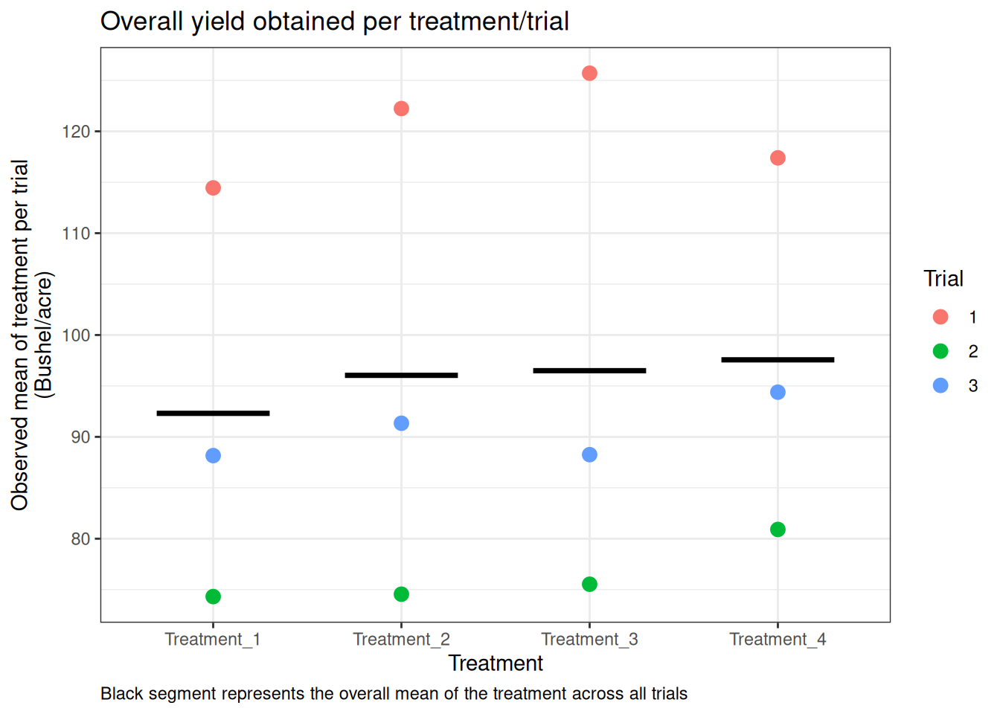
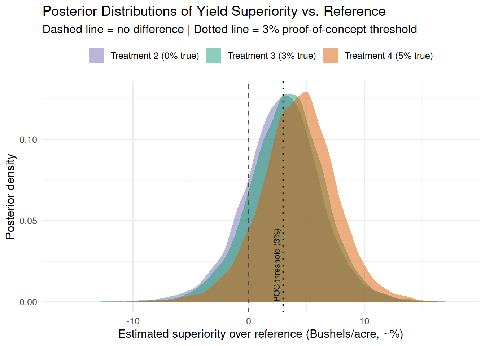

The development of new molecules in agriculture has historically been driven by classic null-hypothesis significance testing (NHST). Faced with a new active ingredient (AI) candidate for the market, one would ideally want to show that its efficacy is superior to either an untreated control or a reference product already on the market, in order for it to be economically attractive.
Setting aside comparisons against an untreated control, this paradigm faces a critical bottleneck in agricultural product development: existing reference products are often already highly efficacious, which makes superiority hard, or even impractical, to establish under the NHST framework. Yet decisions still need to be made, with whatever data are available, at every stage of a molecule’s life cycle.
Bayesian decision frameworks remain far less common in agriculture than in clinical trials. I’d venture that one reason is the absence of the kind of standardized guidelines the pharmaceutical industry has long relied on for data collection and analysis — in their absence, each agricultural company is left to define its own good practices.
When “Significant” Isn’t the Right Question
Agricultural trials are inherently noisy, and biological products add another layer of noise on top, since their mode of action is shaped by more variables than a purely chemical molecule’s would be. Under these conditions, the frequentist superiority test (p < 0.05) forces a binary decision that fits poorly with a practical reality where small improvements over an already-strong reference are genuinely valuable, yet rarely reach statistical significance at a realistic, affordable sample size.
Let’s work through a fictional scenario. Imagine you’re the statistician on a research team tasked with deciding whether any of several candidate AIs is worth advancing further down the pipeline toward market.
Say a sprayable product already on the market improves corn yield (or any crop, for that matter), and your company has three candidates that showed promise in greenhouse trials. The proof-of-concept bar for any of them to advance is a yield improvement of at least 3% over the reference.
To work through this, let’s lean on data simulation. For simplicity, assume:
We’re not concerned with an untreated control for this exercise.
The reference product — call it “Treatment 1” — has a true mean yield of 100 bushels per acre (Bushel/acre). Treatments 2 through 4, our three candidates, differ from it by 0%, 3%, and 5% respectively. These differences represent the effect sizes of interest: true mean yields of 100, 103, and 105 Bushel/acre for Treatments 2, 3, and 4.
Since we’ll analyze the data as an RCBD, we need to specify the variance components of the model up front: between-trial variance (Trial), trial-block variance (Trial:Block), and treatment-by-trial variance (Treatment:Trial).
Show the code
# 0. Load all required packageslibrary(ggplot2)library(dplyr)library(lmerTest)library(emmeans)library(brms)library(kableExtra)# 1. We set the general parameters for the simulationset.seed(624)n_trials <-3n_blocks <-3n_treatments <-4# Overall meanmu <-100# Fixed treatment effectstrt_effects <-c(Treatment_1 =0,Treatment_2 =0,Treatment_3 =3,Treatment_4 =5)# Standard deviations of random effectstrial_sd <-10block_sd <-2.5gxe_sd <-2residual_sd <-5# 2. Experimental layout design_data <-expand.grid(Trial =factor(1:n_trials),Block =factor(1:n_blocks),Treatment =factor(names(trt_effects), levels =names(trt_effects)))# Block nested within Trialdesign_data$Trial_Block <-interaction(design_data$Trial, design_data$Block,sep =":")# Treatment × Trial interactiondesign_data$Treatment_Trial <-interaction(design_data$Treatment, design_data$Trial,sep =":")# 3. Simulate random effects # Trial effectstrial_effects <-rnorm(nlevels(design_data$Trial),mean =0,sd = trial_sd)names(trial_effects) <-levels(design_data$Trial)# Trial:Block effectsblock_effects <-rnorm(nlevels(design_data$Trial_Block),mean =0,sd = block_sd)names(block_effects) <-levels(design_data$Trial_Block)# Treatment × Trial interaction effectsgxe_effects <-rnorm(nlevels(design_data$Treatment_Trial),mean =0,sd = gxe_sd)names(gxe_effects) <-levels(design_data$Treatment_Trial)# Residual errorsresidual_errors <-rnorm(nrow(design_data),mean =0,sd = residual_sd)# 4. Generate response design_data$y <- mu + trt_effects[design_data$Treatment] + trial_effects[design_data$Trial] + block_effects[design_data$Trial_Block] + gxe_effects[design_data$Treatment_Trial] + residual_errors
Once the trials are complete, the data look like this:
Show the code
p1 <-ggplot(design_data,aes(Treatment, y, color = Trial)) +stat_summary(fun = mean, geom ="point", size =3) +stat_summary(aes(group = Treatment),fun = mean,geom ="crossbar",width =0.6,color ="black" ) +theme_bw() +labs(y ="Observed mean of treatment per trial\n(Bushel/acre)",title ="Overall yield obtained per treatment/trial",caption ="Black segment represents the overall mean of the treatment across all trials")+theme(plot.caption =element_text(hjust =0))p1

Notice how the overall means of Treatments 1 and 2 sit nearly 4 Bushels apart, in favor of treatment 2, despite the fact that their true means are identical. This kind of discrepancy shows up often, particularly when variance is high and sample size is small. The obvious remedy would be to run more trials.
As the statistician on the project, you now fit a generalized linear mixed model over the data (known in agricultural statistics as a trial series analysis) to obtain the p-values needed to decide whether any candidate meets the proof-of-concept bar.
A trial series analysis of this kind takes the form yield ~ Treatment + (1|Trial) + (1|Trial:Block) + (1|Treatment:Trial): alongside the fixed treatment effects, the random intercepts (1|Trial), (1|Trial:Block), and (1|Treatment:Trial) account for between-trial variance, trial-block variance, and the treatment-by-trial interaction, respectively.
Fitting this model gives the following estimated means:
Already, the estimated means depart noticeably from their true values. Unsurprising given how few locations we have: there simply aren’t enough data points to pin down the variance structure precisely.
Since the goal is to compare every candidate against the reference, a Dunnett’s test at an alpha of 0.05 is the natural next step:
None of the candidate treatments differ significantly from the reference. Within the classical NHST framework, this leaves us without a conclusive basis for a decision.
This scenario plays out often enough in practice that, under pressure from stakeholders, decisions frequently fall back on qualitative judgment (typically the expertise of field agronomists). There’s nothing wrong with that in itself, but it raises the question: what if we had a decision framework better suited to this kind of noisy, high-baseline-efficacy data in the first place?
Power Analysis: How Many Trials Would NHST Actually Need?
Before jumping to a Bayesian alternative, it’s worth asking a more basic question: could we simply run more trials until the NHST framework gives us a clear answer? Let’s check empirically, using the exact same data-generating process as above, varying only the number of trials and focusing in the treatment we know from our simulated data that its effect size is over the proof-of-concept bar (treatment 4 with 5% more yield than the reference).
Even with 40 trials, power hasn’t fully plateaued near 100%, and reaching the conventional 80% threshold requires somewhere in the range of 30-40 individual field trials (for a single candidate, against a single reference, for a single crop!). That’s not a realistic research program; it’s a different research program, one no agricultural company runs for a single proof-of-concept decision.
This is the actual, quantified version of the problem the introduction described qualitatively: NHST isn’t just inconvenient here, it’s asking for evidence at a scale the applied research process cannot practically supply. The question, then, isn’t “how do we get a significant p-value”. Instead, it’s “what can we responsibly conclude from the data we can actually afford to collect.”
A Bayesian Alternative
Rather than forcing a yes/no answer out of the same three trials, let’s ask a different set of questions of the exact same data: how much more probable is it that each candidate is truly superior to the reference, and how strongly do the data actually favor that conclusion over “no real difference at all”?
We refit the same random-effects structure as the GLMM above (including trial, trial-block, and treatment-by-trial variance), but now as a Bayesian hierarchical model, with weakly informative priors on the fixed effects and variance components.
From the posterior draws, we can ask exactly the question the proof-of-concept criterion cares about, which is not “is p < 0.05,” but “how probable is a 3%-or-greater improvement, given what we observed?” and how strongly the data themselves favor a real difference over no difference at all, independent of how we choose to threshold a probability?.
For the first real question, what we simply do is to look at the sampled posterior distribution and count the number of times each treatment is likely to outperform the reference above the POC criteria. This will give us easily interpretable probabilities.
Meanwhile, for the second question, we will look at the Bayes factors (BF), that without falling in to too much technicalities, we can define them simply as given the data at hand, how strong is the evidence of the aforementioned probabilities to hold.
For the latter, we will help ourselves with the Kass & Raftery (1995) BF range, as defined below
BF10 range
Interpretation
1 – 3
Anecdotal — barely worth mentioning
3 – 10
Moderate evidence
10 – 30
Strong evidence
30 – 100
Very strong evidence
> 100
Decisive evidence
(Adapted from Jeffreys’ original scale, as popularized by Kass & Raftery, 1995.)
Thus, we find that treatments 3 and 4, which are the candidates with true 3% and 5% advantages show 54.7% and 66.7% posterior probabilities of clearing the POC bar outright. On the other hand, treatment 2 shows the weaker probability (49.5%). None of this was visible from the Dunnett’s test above. This not because the Bayesian model found something the frequentist one couldn’t, but because it’s answering a more useful question with the same noisy data.
Show the code
knitr::kable(bf_table, align ="lccc")
Treatment
P(delta > 3%, meets POC)
Bayes Factor (BF10)
Treatment_2
0.495
1.55
Treatment_3
0.547
1.92
Treatment_4
0.667
3.17
Notice, though, that only Treatment 4 shows a BF of moderate evidence (3.17). Furthermore, according to Kass & Raftery scale too, Treatments 2 and 3 are barely worth mentioning on its own. So far, this is the honest picture: three trials produce a promising signal, not a verdict. And that, in a way, is the whole point of this approach. So, to say it precisely, instead of forcing a binary “not significant” answer, this approach a hint entirely that can be explored with the expertise that field agronomist solely use in case where the classical answer is the unique resource of a data driven help-decision tool.

Where This Could Actually Go
A promising-but-inconclusive signal after one season isn’t a dead end under this framework the way a non-significant p-value effectively is — it’s a starting point. Each additional season of trials doesn’t have to be analyzed in isolation: the posterior from this season’s three trials can serve as the prior for next season’s, letting evidence accumulate naturally across a growing multi-season data pool, rather than resetting to zero every time. Over several seasons, that accumulated evidence could plausibly reach the same conclusiveness the earlier power analysis showed NHST would need 30-40 trials, in a single season, to achieve — except spread out affordably across time instead of demanded all at once.
This isn’t free, though, and it’s worth being upfront about the real costs of running a program like this in practice:
Compute scales with model complexity, not just data size. A single hierarchical model with three treatments and three trials fits in seconds. A multi-season model accumulating years of trial data, potentially with more candidates, more sites, and richer variance structures, can push MCMC sampling from a minutes-long job to something that needs real compute infrastructure — not something every team can spin up standing next to a spreadsheet.
Bayesian pipelines need engineering, not just statistics. Reproducible priors-updating-into-posteriors across seasons requires a proper data and model-versioning pipeline — this doesn’t happen by rerunning a script by hand each year without something keeping track of what fed into what.
The organizational shift matters as much as the technical one. A probability and a Bayes factor require a different kind of conversation with stakeholders than “significant or not.” That’s a real adoption cost, independent of the math being sound.
None of that makes the case against trying — if anything, it’s the argument for starting the data pool now rather than later, since the earlier a program begins accumulating seasons under a consistent Bayesian pipeline, the sooner those computational and organizational costs turn into a genuine asset instead of a one-off analysis.